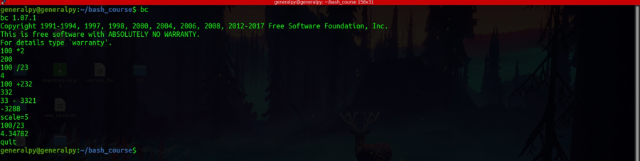

We cannot simply write arithmetic expression in a bash script. If we do, bash will not evaluate the expression, it will treat it as a command.
To perform simple integer arithmetic calculations we use arithmetic expansion.
$((expression))
Available operators in bash are : + - / * ** %.
#!/bin/bash
echo $((4+2))
echo $((4 - 2))
echo $((4 * 2 ))
echo $((4 / 2))
echo $((4 ** 2))
echo $((4 % 2))
We can also use numeric variables in calculations. When using numeric variables, we don't need to expand variables, it is completely optional.
#!/bin/bash
echo $((4+2))
echo $((4 - 2))
echo $((4 * 2 ))
echo $((4 / 2))
echo $((4 ** 2))
echo $((4 % 2))
x=6
y=2
Note that bash cannot handle decimals. If output of an expression is in decimal form, output is given in integer form(precision dropped).
To perform decimal calculations we can use bc command. bc stands for basic calculation and according to gnu manual it is a programming language of its own which can be used to perform mathematical calculations with hight precision.

bc has an internal variable known as scale which decides the precision or numbers after decimal places. We have to set it to have a decimal output.
We can also run bc without that interactive mode by piping expressions to it which is the method we use inside scripts. Just ensure that expression is enclosed in quotes and separate expressions by semicolons.